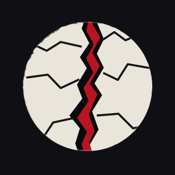

Manifeste · version 2.1
La Faille Noire n'est pas encore un collectif constitué. Le nom, le manifeste et les modalités d'organisation sont ouverts à la discussion collective. Aucun privilège n'est accordé aux personnes à l'origine du projet.
DOCUMENT DE TRAVAIL · 26 OCTOBRE 2026
LA FAILLE NOIRE
Manifeste et proposition de fonctionnement · Version 2.1
Version 2.1 • Document de travail • 26 octobre 2026
Neuf principes pour vivre libres. Huit piliers pour construire ensemble.
Le nom « La Faille Noire » est provisoire. Il sert à désigner le projet, non à en fixer définitivement l'identité. Le
nom, ce texte et les modalités d'organisation sont proposés à la discussion et à la révision collectives.
Préambule — Compléter et avancer ensemble
Nous partons d'un constat simple : des besoins essentiels restent sans réponse, alors même que les savoirs, les compétences, les espaces et les moyens existent souvent autour de nous. Plutôt que d'attendre une transformation générale de la société, nous voulons construire, dès maintenant, des formes concrètes d'autonomie, d'entraide et de création.
Nous nous inscrivons dans l'histoire des mouvements libertaires, de l'éducation populaire, des solidarités ouvrières et de l'autogestion. Nous reconnaissons notamment le travail de la Fédération anarchiste, de la Confédération nationale du travail (CNT), des collectifs autonomes, des associations de solidarité, des syndicats, des coopératives et de toutes les personnes qui font déjà vivre ces pratiques.
Nous ne cherchons ni à les remplacer ni à parler en leur nom. Avant de créer une activité, nous voulons identifier ce qui existe, rencontrer ses acteurs, comprendre leurs besoins et chercher ce que nous pouvons apporter. Nous voulons compléter et avancer ensemble.
La Faille Noire n'est pas encore un collectif constitué. Ce document est une proposition destinée à susciter des rencontres, des critiques, des amendements et des initiatives. Il ne vaut ni statuts définitifs ni décision d'une assemblée qui n'a pas encore eu lieu.
Nous ne cherchons pas à prendre le pouvoir à la place des autres. Nous
cherchons à multiplier les moyens de ne plus le subir.
I. Un texte vivant, sans privilège fondateur
Les personnes à l'origine du projet ne disposent d'aucun droit politique particulier. Leur initiative ne leur confère ni droit de veto, ni autorité permanente, ni monopole d'interprétation. Aucun statut politique privilégié de « membre fondateur » n'est institué.
Toute personne membre peut proposer une modification du nom, du manifeste, des principes ou du fonctionnement. Les règles ordinaires peuvent évoluer par décision collective. Les neuf principes fondamentaux demandent une procédure renforcée : publication préalable, temps réel de discussion, au moins deux délibérations distinctes et majorité qualifiée, à définir lors de la première assemblée. La
procédure ne peut servir à retirer arbitrairement des droits à une minorité.
La mémoire de l'origine du projet peut être conservée, mais elle ne crée aucun titre de propriété politique.
La Faille Noire appartient à celles et ceux qui la font vivre, pas à celles et ceux
qui l'ont imaginée.
II. Le pacte fondamental — Neuf principes
LIBERTÉ
1. Liberté individuelle et liberté de conscience Chaque personne est libre de penser, de croire ou de ne pas croire, de s'exprimer et de choisir sa manière de vivre dans le respect des droits d'autrui. Aucune religion, divinité, révélation ou autorité spirituelle ne fonde les décisions de La Faille Noire. Le collectif est indépendant des institutions religieuses et garantit la liberté de conscience de ses membres.
2. Autogestion et démocratie directe Les décisions appartiennent aux personnes concernées. L'ancienneté, l'argent apporté, le temps consacré au collectif ou une compétence particulière ne donnent pas davantage de voix politique. Les responsabilités sont précises, limitées, contrôlables et révocables, dans le respect d'une procédure équitable.
3. Liberté de questionner et de transformer Aucun texte n'est sacré. Chacun peut critiquer les règles et proposer des changements. Modifier le pacte fondamental exige toutefois une délibération approfondie, ouverte et suffisamment lente pour protéger les droits communs contre les décisions précipitées.
ÉGALITÉ
4. Égale dignité et non-discrimination Aucune personne ne doit être exclue ou dévalorisée en raison notamment de son genre, de son identité ou expression de genre, de son orientation sexuelle, de ses caractéristiques sexuelles, de son origine, de sa couleur de peau, de sa religion ou absence de religion, de son handicap, de sa neurodivergence, de son âge, de sa santé, de sa classe sociale ou de sa situation administrative. Cette liste n'est pas limitative.
5. Refus des dominations et approche intersectionnelle Nous reconnaissons que les discriminations et dominations se croisent et peuvent se renforcer. Nous refusons notamment les rapports de domination patriarcaux, capitalistes, racistes, coloniaux, fascistes, LGBTQIphobes et validistes. Dans chaque projet, nous cherchons à prendre en compte l'accessibilité, la justice sociale, le respect des personnes et la responsabilité écologique. Nous savons que nos pratiques seront imparfaites ; nous nous engageons à les examiner et à les améliorer.
6. Justice, recours et résolution des conflits Les désaccords font partie de la vie collective. Chacun doit pouvoir être entendu, connaître les règles applicables, contester une décision et bénéficier d'une procédure équitable. Nous prévoyons dialogue, médiation consentie lorsqu'elle est appropriée, protection des personnes concernées, voies de recours et prévention des représailles. Les situations de violence, de harcèlement ou de domination exigent une réponse protectrice, sans imposer une médiation à la personne qui les subit.
SOLIDARITÉ
7. Entraide et justice économique L'entraide est une pratique réciproque, non une charité verticale. Le travail et l'engagement collectif ont une valeur, qu'ils soient rémunérés ou bénévoles. Nous refusons que la précarité contraigne des personnes à travailler gratuitement. Lorsque des missions sont rémunérées, les critères, les responsabilités et les montants sont transparents ; à travail comparable, rémunération comparable. Recevoir un salaire ou donner davantage de temps ne confère aucun pouvoir politique supplémentaire.
8. Responsabilité écologique et partage des ressources Nous privilégions, lorsque c'est possible, le réemploi, la réparation, la mutualisation et des modes de production durables. Nous cherchons à progresser sans transformer l'écologie en test de pureté ni exclure les personnes qui disposent de peu de moyens.
9. Construction collective et autonomie solidaire Nous ne voulons pas seulement dénoncer les manques : nous voulons construire des réponses utiles avec les personnes concernées. Nous cherchons à renforcer l'autonomie sans isoler les individus et sans devenir le substitut gratuit de services publics délaissés.
Nos valeurs ne sont pas seulement ce que nous défendons : elles sont la manière
dont nous construisons.
La liberté nous permet de choisir, l'égalité nous permet de participer, la
solidarité nous donne les moyens de construire.
III. Huit piliers d'action
Pilier 1 — Éducation populaire et émancipation Nous voulons favoriser des espaces d'apprentissage ouverts, critiques et accessibles à tous les âges. L'« École commune », nom de travail, pourrait relier cours, ateliers, échanges entre générations, formations et transmission de savoir-faire. Sciences, langues, histoire, politique, philosophie, arts et compétences pratiques y ont leur place. Chacun peut apprendre et transmettre.
Pour les enfants et les adolescents, nous distinguons les activités éducatives complémentaires de la création éventuelle d'établissements scolaires, qui suppose des garanties pédagogiques, de protection et des démarches légales spécifiques. Ce pilier concerne avant tout les pratiques d'apprentissage ; le pilier 7 concerne les ressources et les outils de diffusion.
Pilier 2 — Entraide et solidarité Nous voulons soutenir les réseaux existants : Secours populaire, Restos du Cœur, associations locales, réseaux d'entraide et initiatives citoyennes. Notre première démarche est de les rencontrer et de demander quels besoins ne sont pas couverts, plutôt que de dupliquer leurs actions.
Nous envisageons des caisses de solidarité, des échanges de compétences, une aide matérielle, une logistique partagée et des moyens de transport mutualisés : véhicules, vélos-cargos, conducteurs volontaires, espaces de stockage. Les missions doivent respecter les assurances, les règles de sécurité, les limites du bénévolat et le droit de dire non.
Ce pilier accueille aussi « Interstice », espace de propositions et de mise en lien : signaler un besoin dans un quartier, un village ou une région ; partager une idée ; chercher des partenaires ; suivre les réponses et les expérimentations.
Pilier 3 — Autonomie matérielle et économique Nous voulons identifier, relier et soutenir les ateliers partagés, Fab Labs, garages solidaires, ateliers vélo, ressourceries, menuiseries collectives, coopératives et autres espaces de production accessibles.
Une cartographie ne suffira pas : les lieux seront décrits selon leur gouvernance réelle, leurs tarifs, leur accessibilité, leurs conditions d'accueil, leurs pratiques de travail et leurs possibilités de coopération. Nous distinguerons les lieux simplement identifiés, les lieux rencontrés et les partenariats effectivement établis.
Lorsque des besoins restent sans réponse, nous pourrons expérimenter nos propres outils de production et de mutualisation. Nous chercherons une économie capable de rémunérer dignement les missions nécessaires, sans exploiter le bénévolat ni donner aux personnes rémunérées une autorité politique particulière.
Pilier 4 — Culture et création libres Nous voulons faciliter l'accès aux spectacles, concerts, expositions, projections, pratiques artistiques, ateliers et résidences. Nous souhaitons mutualiser lieux, matériels, compétences techniques et moyens de production, en coopération avec les structures culturelles existantes.
La gratuité ou le prix libre pour le public ne doivent pas reposer sur le travail gratuit des artistes, techniciennes, techniciens ou équipes de production. Nous chercherons des modèles de financement transparents, y compris les aides des collectivités, de l'État et les programmes européens lorsque les projets sont éligibles.
Un annuaire des financements et des partenaires culturels pourrait être mis à disposition dans les outils communs.
Pilier 5 — Écologie sociale et autonomie territoriale Nous voulons favoriser le réemploi, la réparation, les ressources partagées, les jardins collectifs, les solutions locales de mobilité et l'adaptation aux risques climatiques. L'écologie guide nos choix sans prétendre que nous pouvons toujours disposer immédiatement de moyens de production exemplaires.
Nous défendons la remise en usage de bâtiments vacants lorsque ceux-ci peuvent répondre à des besoins de logement, de création, de solidarité ou d'activité collective. Nous privilégions le dialogue avec les propriétaires, les collectivités et les établissements fonciers, ainsi que les conventions
d'occupation, prêts et réhabilitations.
Lorsque ces démarches échouent face à des refus insuffisamment justifiés et à un besoin collectif important, nous reconnaissons la légitimité politique possible de la désobéissance civile non violente. Une éventuelle action ne saurait être automatique : elle exige débat collectif, examen des alternatives, information sur les conséquences juridiques, protection des personnes et participation strictement volontaire. La légalité ne suffit pas toujours à établir la légitimité.
Un observatoire des espaces vacants pourrait être développé dans Interstice, avec attention à la fiabilité des informations et à la vie privée.
Pilier 6 — Autogestion et fédéralisme libertaire La Faille Noire aspire à relier des collectifs autonomes autour de principes communs. Les décisions sont prises au plus près des personnes concernées. Les mandats de coordination sont limités, transparents et révocables. Chaque groupe peut expérimenter et partager ses résultats sans imposer son modèle aux autres.
La « Commune (nœud fédéral) », nom provisoire, serait un service commun de coordination, de documentation, de communication, de visibilité et de mutualisation. Elle pourrait administrer des moyens collectifs ou des fonds affectés à des projets décidés par les collectifs compétents, selon des règles de gestion explicites.
La Commune centralise l'information et les moyens confiés à sa gestion, jamais
l'autorité.
La Commune n'a aucun pouvoir politique propre sur les collectifs. Elle ne définit pas leurs orientations, ne dispose d'aucun droit de veto et ne peut engager leurs ressources sans mandat explicite. Les personnes chargées de son fonctionnement rendent des comptes et peuvent être remplacées. Les règles d'adhésion, de désaccord, de retrait et de gestion des biens communs devront être définies collectivement.
Pilier 7 — Savoirs libres et autonomie technologique Nous voulons construire une bibliothèque numérique accessible, multilingue et ouverte, regroupant des ressources éducatives, historiques, scientifiques, philosophiques, politiques et pratiques, dans le respect des droits d'auteur et des licences.
Un « Atelier des savoirs » pourrait produire des tutoriels vidéo, des fiches illustrées et des documents texte avec une petite équipe mobile de captation, lumière et son. L'objectif est de transmettre des savoir-faire utiles et de permettre aux personnes concernées de documenter elles-mêmes leurs pratiques.
Nous privilégions les logiciels libres, les formats ouverts, la protection des données, la possibilité de consulter hors ligne et l'autonomie des infrastructures. Ce pilier construit les outils de transmission ; il ne remplace pas la démarche éducative du pilier 1.
Technologie, libertés et souveraineté populaire La technologie n'est pas un ennemi. Elle peut émanciper, faciliter la coopération et rendre les savoirs accessibles. Mais le progrès technique n'est pas automatiquement un progrès social : nous examinons qui conçoit les outils, qui les possède, qui peut les modifier, qui en bénéficie et qui en supporte les coûts.
Nous défendons les quatre libertés du logiciel libre : utiliser les programmes pour tout usage, étudier leur fonctionnement, les modifier et redistribuer des copies, y compris améliorées. Nous favorisons les licences libres adaptées, les formats ouverts, l'interopérabilité, la documentation et la possibilité de quitter un service sans perdre ses données. Un logiciel libre n'est pas nécessairement gratuit ; le travail de création, de maintenance et de formation doit pouvoir être rémunéré.
Nous défendons la vie privée, le pseudonymat, la confidentialité des communications et la possibilité de contribuer sans révéler systématiquement son identité. Face à la surveillance commerciale ou étatique abusive, nous privilégions l'éducation numérique, le chiffrement, la minimisation des données et des infrastructures indépendantes. Nous ne promettons pas un anonymat absolu : chaque outil comporte des limites et des risques qu'il faut expliquer.
Nous encourageons l'auto-hébergement, les hébergeurs associatifs, les réseaux fédérés, les communications locales et les réseaux maillés lorsque ces solutions sont utiles. Chaque collectif doit pouvoir garder la maîtrise de ses données. La mutualisation technique n'autorise ni surveillance interne ni concentration de pouvoir. Aucun échange de données personnelles ne doit être imposé.
Nous cherchons des outils accessibles aux personnes peu équipées ou peu familières du numérique, avec des alternatives non numériques lorsque c'est possible. Nous prenons en compte l'énergie, les matériaux, la réparation et la durée de vie des équipements.
L'intelligence artificielle et l'automatisation peuvent aider à apprendre, créer ou alléger certaines tâches ; elles ne doivent pas se substituer à la responsabilité démocratique, invisibiliser le travail humain ni justifier la surveillance. Nous voulons contribuer à des communs numériques documentés, réutilisables et gouvernés collectivement.
La technologie doit rester un moyen de comprendre, de créer, de communiquer et de se protéger, jamais une autorité à laquelle nous nous soumettons.
Un référentiel ouvert des outils et partenaires La Faille Noire évaluera ses outils selon des critères publics : liberté des licences, confidentialité, sécurité, accessibilité, interopérabilité, sobriété, coût réel, gouvernance, capacité de migration et conditions de travail. Aucun fournisseur ne sera considéré comme irréprochable par principe. Les choix seront révisables et documentés.
Parmi les pistes à étudier, sans partenariat établi ni validation définitive : Framasoft et les hébergeurs du collectif CHATONS pour les services numériques ; Matrix et Element pour les communications fédérées ; Nextcloud pour les fichiers et la collaboration ; Syncthing pour la synchronisation entre machines ; Proton Mail pour certains usages de messagerie. Ces solutions ont des architectures et des limites différentes : service chiffré ne signifie pas anonymat complet, synchronisation ne signifie pas sauvegarde, et logiciel libre ne garantit pas à lui seul une bonne gouvernance.
Nous souhaitons explorer un stockage fédéré : chaque collectif pourrait héberger ses documents et autoriser la réplication volontaire de certaines ressources communes sur des machines de membres ou
d'associations partenaires. Les documents publics pourraient être largement partagés ; les données sensibles exigeraient des accès restreints, du chiffrement, des sauvegardes indépendantes, des mises à jour et des règles de conservation. La Commune pourrait tenir un annuaire technique, sans devenir propriétaire de toutes les données.
Pilier 8 — Égalité réelle, diversité et lutte contre les discriminations Ce pilier traverse tous les autres. La Faille Noire doit être accueillante pour les personnes LGBTQIA+, trans, non binaires, intersexes, racisées, migrantes, handicapées, neurodivergentes, précaires, de toutes croyances ou sans croyance, de tous âges et de toutes situations. Aucune liste ne prétend épuiser la diversité humaine.
L'inclusion se mesure concrètement : accessibilité physique, sensorielle et cognitive, formats de participation variés, horaires compatibles avec les contraintes de vie, prix solidaires, respect des identités et des pronoms, confidentialité et possibilité de signaler les discriminations.
Les personnes concernées doivent pouvoir participer aux décisions qui les touchent, sans devoir représenter seules une catégorie de population. Les violences et discriminations ne peuvent être excusées au nom de la liberté d'expression.
IV. Des outils communs : Interstice et La Commune
Interstice — Proposer, trouver, relier Interstice est le nom provisoire d'un outil ouvert permettant de faire remonter des besoins, de proposer des idées, de retrouver des ressources et de transformer certaines propositions en actions. La première version pourrait se limiter à trois questions facultatives : « De quoi as-tu besoin ? », « Qu'est-ce que tu peux partager ? », « Où es-tu ? », accompagnées d'un champ libre.
La consultation ne nécessiterait pas de compte. Une proposition publique recevrait une référence unique, par exemple INT-0042. La personne pourrait contribuer anonymement, utiliser un pseudonyme ou laisser volontairement un moyen de contact. Un code privé de récupération pourrait lui permettre de retrouver des droits sur sa proposition sans compte permanent.
La plateforme distinguerait les informations publiques des informations privées et proposerait aussi des modes de participation hors ligne ou par l'intermédiaire d'associations partenaires.
Une plateforme, plusieurs espaces autonomes L'accueil public resterait simple : « Découvrir », « Proposer », « Échanger ». À terme, le site et l'application pourraient réunir Interstice, cartographies, bibliothèque, mutualisation des équipements, annuaire des financements et outils de coordination de La Commune.
Nous privilégions une application web progressive et des formats interopérables. Chaque collectif doit pouvoir garder la maîtrise de ses espaces et de ses données. La fédération ne doit pas dépendre d'un hébergement central unique.
Communication locale et réseau maillé Nous souhaitons explorer les communications de proximité inspirées des réseaux mesh, notamment par Bluetooth, pour permettre des échanges locaux même lorsque l'accès à Internet est limité. Le développement se ferait par étapes : messagerie simple, contenus disponibles hors connexion, puis éventuelle synchronisation volontaire d'informations entre appareils.
Aucune donnée personnelle ne doit être relayée sans choix éclairé des personnes. Les contraintes de portée, de sécurité, de fiabilité et de compatibilité devront être étudiées avant toute promesse technique.
Modération et protection des espaces La Faille Noire n'est pas un espace politiquement neutre. Elle défend une orientation libertaire, antifasciste, antiraciste, féministe et solidaire. Les désaccords compatibles avec le pacte sont bienvenus ; les discours de haine, les menaces, le harcèlement et les propos visant à justifier l'exclusion ou la domination de personnes n'ont pas leur place.
Les règles de modération seront publiques, appliquées aux comportements et aux propos plutôt qu'aux étiquettes supposées. Nous envisageons une équipe de volontaires formés, désignés pour des mandats courts et révocables. Les recours pourraient être examinés ponctuellement par des personnes extérieures à cette équipe. Les modalités exactes devront être décidées collectivement.
Vie privée et logiciels libres Le code des outils développés par La Faille Noire devrait être publié sous licence libre lorsque cela est compatible avec la sécurité des personnes. Nous refusons la publicité ciblée et les traceurs commerciaux. La collecte de données sera limitée au nécessaire, et les risques techniques expliqués sans promettre un anonymat absolu.
V. Financement, travail et moyens communs
Cotisations modulées, dons, recettes d'activités, partenariats, financements participatifs et subventions publiques peuvent être envisagés. Les financements sont recherchés pour des actions effectivement éligibles, avec une comptabilité claire et le respect des obligations applicables. Aucun financeur n'obtient un pouvoir politique en échange de son soutien.
Nous distinguons la participation politique, qui reste égale pour toutes les personnes membres, et les missions de travail, qui peuvent être rémunérées. Les critères de rémunération doivent être publiés et discutés. Les activités bénévoles sont librement consenties ; elles ne doivent pas masquer des emplois nécessaires ou épuiser les personnes les plus disponibles.
Des fonds communs pourraient un jour financer des équipements, véhicules, ateliers ou bâtiments. Leur gestion serait confiée à des mandataires responsables sur décision explicite des collectifs concernés, avec comptes accessibles, contrôles et procédures de retrait ou de restitution définies à l'avance.
Choisir des partenaires financiers cohérents Pour ses opérations légales, La Faille Noire pourra examiner les établissements coopératifs ou mutualistes, notamment le Crédit Coopératif et le Crédit Mutuel, sans présumer de leur conformité automatique à nos valeurs. Le choix d'une banque tiendra compte de sa gouvernance réelle, de ses frais, de son accessibilité, de la qualité de ses services aux associations et des possibilités de contrôle collectif.
Pour les dons, cotisations et collectes, des services associatifs tels que HelloAsso pourront être évalués. Ces prestataires ne remplacent pas une banque, et leurs conditions, leurs pratiques de données et leurs coûts devront être examinés.
Des trésoreries autonomes et une solidarité concrète Chaque collectif garde la maîtrise de son budget. Une caisse commune peut financer l'entraide, les équipements, la mobilité ou les projets décidés ensemble. La Commune n'administre que les sommes explicitement confiées à sa gestion, selon un mandat précis, avec comptes vérifiables, double contrôle des opérations sensibles et possibilité de révocation. La transparence des comptes n'autorise pas la divulgation des données personnelles des bénéficiaires ou des donateurs.
Nous voulons aussi favoriser les prêts de matériel, les achats groupés, les échanges de compétences et les formes de coopération non marchandes, sans imposer une comptabilisation de chaque geste d'entraide. À terme, des fonds mutualisés pourraient soutenir l'acquisition de lieux communs, dans des structures juridiques adaptées et sans appropriation politique par une minorité.
Une caisse de solidarité, un compte associatif, un service de paiement et une activité de crédit ne relèvent pas des mêmes obligations. La Faille Noire n'entend pas exercer des activités bancaires réglementées sans le cadre et les autorisations nécessaires.
VI. Première rencontre et questions à construire ensemble
La première étape n'est pas de proclamer une fédération achevée. C'est de rencontrer les personnes intéressées et les organisations déjà actives. Une affiche pourrait porter le message :
Des besoins restent sans réponse. On veut les combler ensemble.
Un QR code renverrait vers une page de présentation courte, sans obligation d'identification. La première rencontre permettrait de discuter des principes, de repérer les besoins locaux, de choisir quelques expérimentations modestes et de définir les règles minimales de coopération.
Questions ouvertes à la première assemblée • Comment administrer les ressources communes sans créer un pouvoir central ?
• Comment garantir l'autonomie d'un collectif tout en protégeant les principes communs ?
• Comment rémunérer justement le travail collectif sans opposer personnes salariées et précaires ?
• Comment organiser les médiations, les recours et la protection contre les violences ?
• Comment choisir les premiers projets, les arrêter ou les transmettre ?
• Comment encadrer la participation des mineurs et les projets éducatifs ?
• Comment décider collectivement des actions de désobéissance civile sans exposer des personnes malgré elles ?
• Comment organiser la modération et la protection des données sur les outils numériques ?
Ces questions ne sont pas des lacunes à dissimuler : elles appartiennent à la vie démocratique du projet. Elles ne doivent pas être tranchées définitivement par les seules personnes qui l'ont imaginé.
VII. Notre méthode : commencer petit, relier, transmettre
Nous voulons expérimenter des projets limités, utiles et évaluables. Chaque proposition précise le besoin auquel elle répond, les personnes concernées, les moyens nécessaires, les risques, l'accessibilité, les responsabilités et les critères de réussite.
Nous évaluons non seulement ce qui a été produit, mais aussi qui a pu participer, qui a porté le travail invisible, quelles ressources ont été partagées et quelles dépendances ont diminué. Un projet qui grandit en épuisant ses membres ou en concentrant le pouvoir ne remplit pas son objectif.
Une initiative peut devenir autonome, rejoindre d'autres structures ou s'arrêter. Les réussites, les erreurs et les savoirs doivent pouvoir circuler.
Compléter ce qui existe. Construire ce qui manque. Avancer ensemble.
Fin de la version 2.1 — Proposition ouverte à la discussion, non adoptée par une assemblée constitutive.